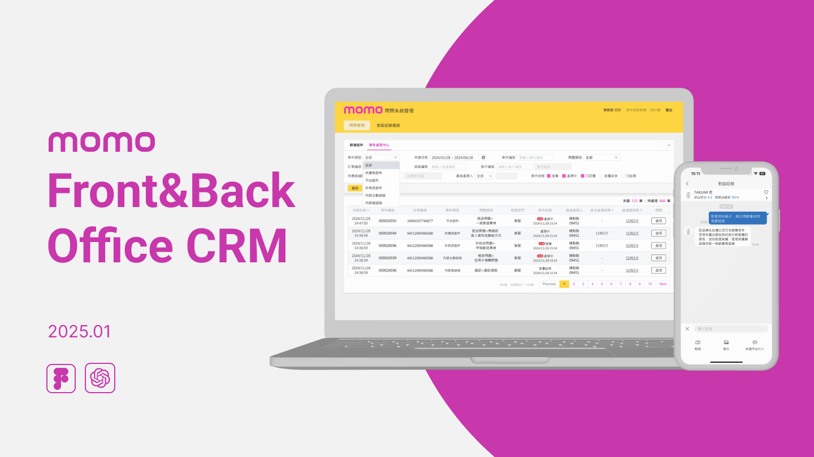
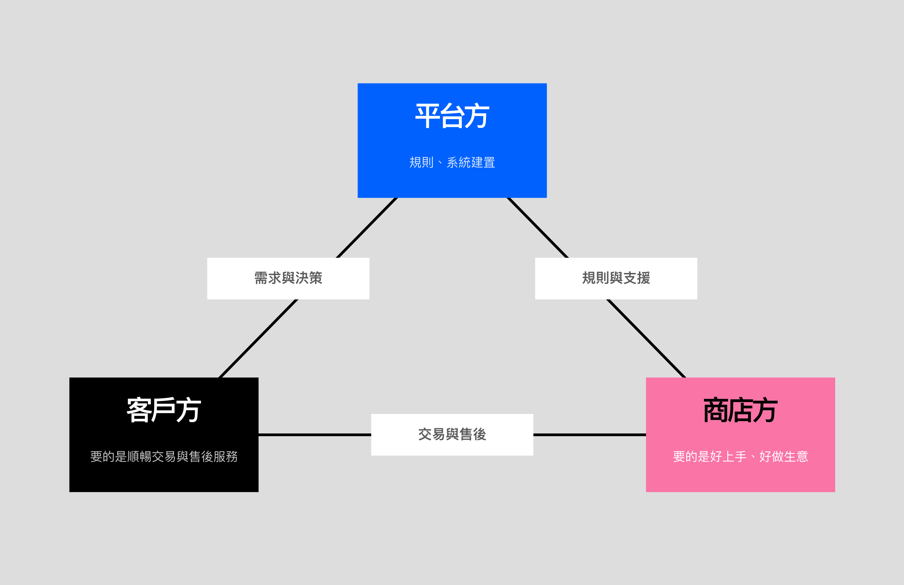
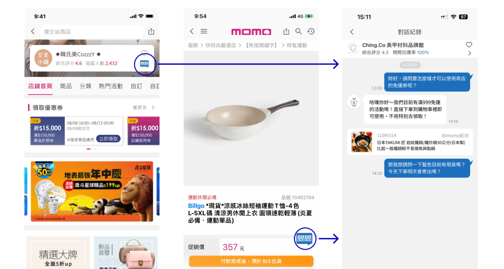
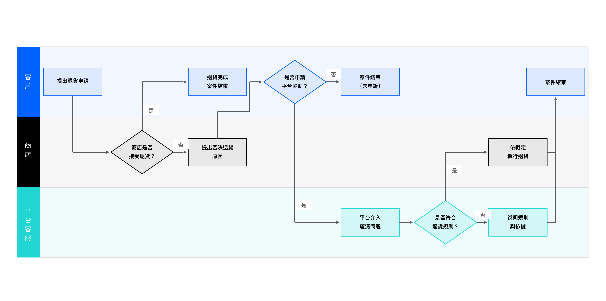
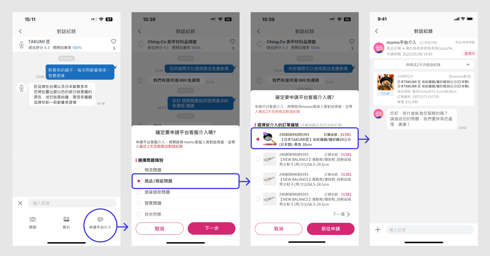
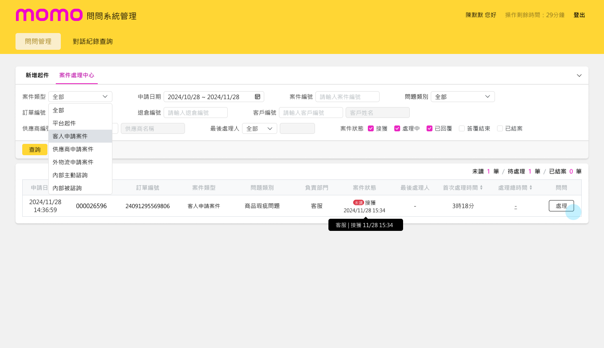
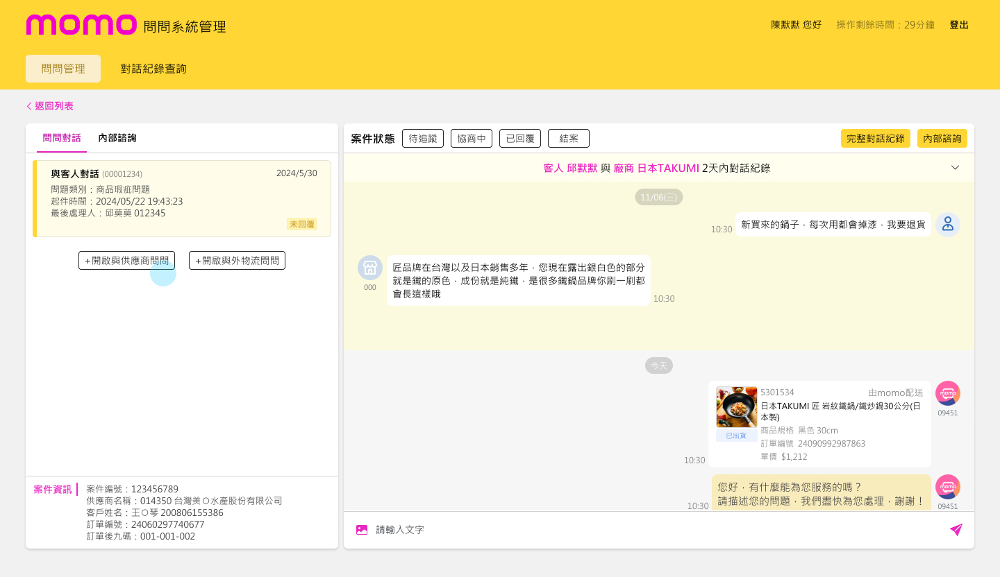

This is a backend / internal-tool project. The content is protected — enter the password to view. Available on request.
Wrong password — please try again.
← Back to works
Case Study — 06
momo 問問 is about getting the three sides of a marketplace — platform, stores, and shoppers — talking to each other. At the time, momo was shifting from a pure 2C retailer toward a 2B2C marketplace and opening up to third-party stores. I designed the shopper-facing chat, 問問, and the customer-service back office that keeps those conversations moving, disputes included.
01 — Challenge
The moment stores came onboard, three groups with very different goals had to work together. The platform needed to set the rules and build the system. Stores wanted it easy to run their business. Shoppers just wanted a smooth purchase and someone to turn to afterwards. My job was to keep the communication between them from breaking down.

02 — Design
How should shoppers and stores actually talk? I went with the format everyone already knows: a chat thread, 問問. It sits right on the store page and the product page, so a question can happen on the spot, without anyone having to leave what they were looking at.

03 — Process
But not every order wraps up smoothly. For the ones that turn into disputes, I laid out the whole platform-intervention flow across the customer, the store, and platform support, so each step is clear: who acts next, and at what point the platform comes in to mediate.


04 — A Judgment Call
This was a genuinely tricky trade-off. Operations wanted the platform-intervention entry to be obvious, so people could find it when they really needed it; customer service worried that if it were too obvious, every little thing would get dumped on the platform. So my job became convincing the stakeholders of a two-part answer: a gating mechanism that only lets a case reach platform intervention when there's a real order problem, plus a compromise on the UI — the entry lives inside the "＋" menu, findable when you need it but not something you notice day to day.
05 — The Back Office
Customer service needed a workspace of their own for all this. I kept the back office close to the way they already worked, turned each case into a single chat thread, and pulled the relevant order details in automatically, so handling a case meant fewer clicks and less guessing about each order.


06 — Impact
In the end, the structure was adopted by the team, and became the base that later features were built on.